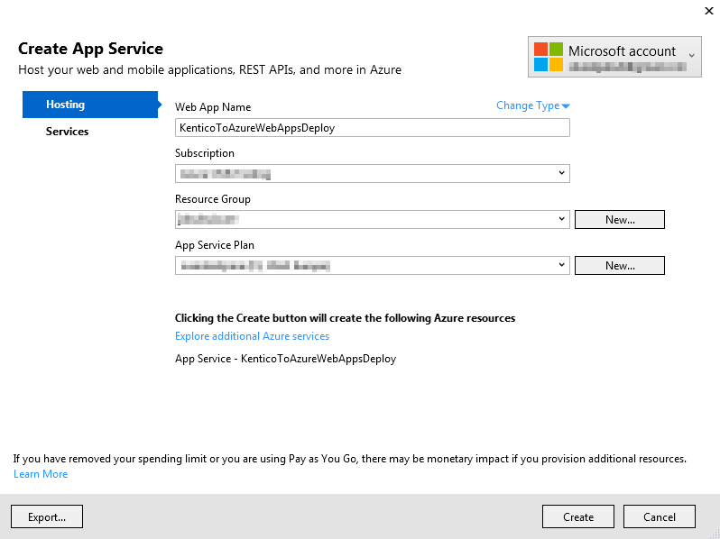
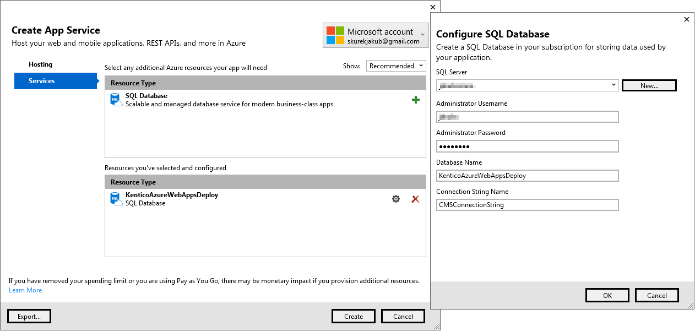

Deploying existing Kentico projects to Azure Web Apps
If you already have a Kentico website or web application project hosted on a traditional web server or prepared for deployment, you can decide to move your project to Azure Web Apps.
This scenario expects that you have a Kentico website or web application project installed in a local file system, connected to a standard Microsoft SQL database. If you want to move your project to Azure Web Apps, you need to:
Deploy your database to Azure SQL (if you want to have the whole project on Azure, otherwise it is not necessary)
Deploy the project files through Visual Studio. Alternatively, you can also deploy your project over FTP.
However, please read the Possible issues section first and adjust your project according to the recommendations.
Possible issues
The following issues present problems which you should be aware of during the process of deploying an existing project to an Azure Web Apps project. Please assess whether they apply to your project and adjust your project according to the recommendations.
If you have set up a web farm in your project, the system may contain unnecessary web farm servers in the database. Therefore, we recommend that you delete the old web farm servers in the UI to ensure that a licensing error does not occur. And configure the web farms to generate web farm servers automatically.
If you are deploying a web application project and you store virtual objects (form layouts, page layouts, transformations, etc.) in the file system (when the System -> Virtual objects -> Store all virtual objects in file system option is enabled), the virtual objects may not be deployed together with the project. Either move the objects back to the database or include the object files in the project (as described in Deployment mode on web application projects) before deploying your project to the Azure platform. Kentico web site projects do not require any actions in this regard.
Your database may contain custom database objects that are not supported on Azure SQL. Because of this limitation of the Azure platform, you might not be able to migrate your database to Azure SQL without modifications. You might encounter issues when deploying your database to Azure if you have somehow customized your database (stored procedures, indexes, access to tables) or if you have developed custom modules.
Part 1 - Deploying the database to Azure
You can host your project in Azure Web Apps and keep your database in a standard Microsoft SQL server. However, we recommend that you also move your database to Azure, as hosting your database on Azure ensures the best performance.
To learn how to deploy on-premise databases to Azure SQL Database, see the SQL Server database migration to SQL Database in the cloud article.
For example, you can use the following steps to deploy your database using the Deploy Database to Microsoft Azure Database wizard in SQL Server Management Studio:
Create an Azure SQL Database Server and configure its firewall to accept your IP address.
Deploy your SQL server according to the instructions in the SQL Server database migration to SQL Database in the cloud article.
Change the connection string in the web.config file of your Kentico project to connect to the deployed Azure SQL database. You can use the following template:
<connectionStrings><addname="CMSConnectionString"connectionString="Server=DATABASE_SERVER.database.windows.net;Database=DATABASE_NAME;User ID=DB_SERVER_USER_NAME;Password=DB_SERVER_PASSWORD;Trusted_Connection=False;Encrypt=True;Connection Timeout=120"/></connectionStrings>Replace the upper-case placeholder words with your own data.
You have deployed your database to the Azure SQL database. Proceed with creating a new Azure Web Apps service.
Part 2 - Creating Azure Web Apps from Visual Studio
Before you can deploy your project, you need to create a new Azure Web Apps service. You can do this from the Microsoft Azure management portal or directly from Visual Studio:
Open your Kentico project in Visual Studio.
Open the Server Explorer tab (or Database Explorer tab in Express editions of Visual Studio).
Expand the Azure section, right-click App Service, and select Create New App Service....
A Create App Service window opens.
On the Hosting tab:
Type the web app name (URL).
Select the Azure subscription under which the Web App will be created.
Select an existing Resource Group or create a new one.
Select an existing App Service plan or create a new one.

Creating an Azure App Service application in Visual Studio
Switch to the Services tab and create a new SQL Database for the application:
Select an existing or create a new SQL server.
Provide administrative credentials for the server.
Specify a name for the application's database.
Set Connection String Name to CMSConnectionString.

Click Create.
Right-click the newly created web app and select View settings.
Modify the connection string to connect to your database deployed to an Azure SQL server (change the name of the database to correspond to the deployed database).
You can view the newly created web app in the Azure management portal under Web Apps. You can now deploy your project to Azure Web Apps.
Automatically created Azure SQL Database
Note that creating a Web App from Visual Studio also creates a new Azure SQL Database on the specified server. If you already have a database on Azure, you will not need this automatically created database. Therefore, you should delete this database to avoid additional costs:
Open the Azure management portal.
Select SQL Databases.
Select the automatically created database. The name should correspond to the name of the newly created Web App with a '_db' suffix.
Click Delete.
Part 3 - Deploying projects to Azure Web Apps
The process for deploying Kentico projects is similar for both web site and web application installations.
Including files in web application projects
If you are deploying a web application project, do not forget to include added files to the project. For example media library files added through the user interface.
To add files to a project, enable the Show All Files option in the Solution Explorer menu, locate the file, right-click the file and select Include in project. This ensures that the files are deployed along with the project.
Open your Kentico project in Visual Studio.
Open the web.config file and make sure that the sessionState mode is set to InProc.
<sessionStatemode="InProc"/>Use InProc mode if you plan to use one instance of the Web App service. If you want to scale your web app to more instances, you will need to configure the session state differently. See Storing cache and session state data in Azure environment.
Right-click the project (CMSApp or CMS) in the Solution Explorer and select Publish... (or Publish Web App).
Select Microsoft Azure App Service.
Select the previously created web app in the drop-down list.
Click OK. The system downloads the publish profile.
Leave the settings as they are.
Click Publish.
The system deploys your project to the Azure Web App service. Check that the project is correctly connected to the database (the database installation dialog does not appear) and add a new license for your domain in the Licenses application.
After that, proceed to performing the following final configurations
Adjust the web hosting plan mode on your web app.
Configure the tier of your Azure SQL database according to our recommendations.
After that, your Kentico project is ready to run in Azure Web Apps.
Increasing storage capacity on Azure Web Apps
By default on Azure Web Apps, all files are stored in the file system with the application, including the media files. The capacity of the storage space is limited – the Basic plan has 10 GB storage available, see Websites Limits for details. When you exceed the capacity, for example by uploading large media files, you have the following options:
Raise the web hosting plan's pricing tier to Standard, which has 50 GB of storage.
Configure your system to use Azure Blob Storage and store the media files there.
See Increasing storage capacity on Azure Web Apps for instructions.
Configuring web farms for Azure Web Apps
If you plan to increase the number of instances associated with your Web App service (on the Scale out (App Service plan) tab), you need to configure web farms in your project to dynamically create and delete web farm servers. See Enabling web farms on Windows Azure Web Apps for instructions.